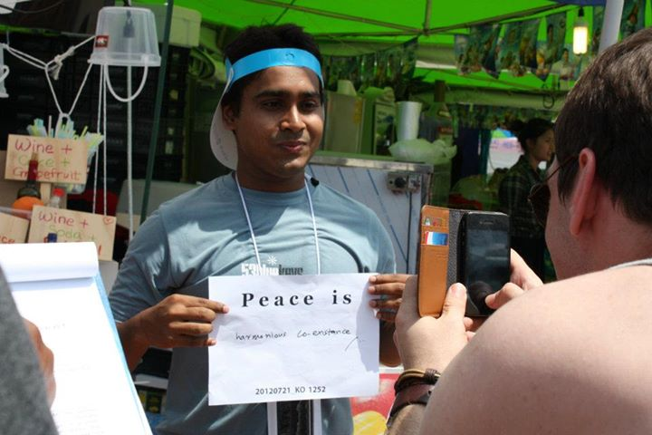

ISUR.in

- Defining Peace at
- World Peace Initiative
- Boryeong South korea
SITE under construction
The Website isn't ready yet, but do come back to check more later.
Meanwhile both MAVEN and MOM (India's initiative to reach Mars) are heading towards Mars.
To make things more exciting they gonna encounter "Siding Spring comet" just after reaching there,
as if the divine is greeting em. I am excited and biting my nails for both.
Metaphorically speaking, I am gonna reach Mars and beyond....